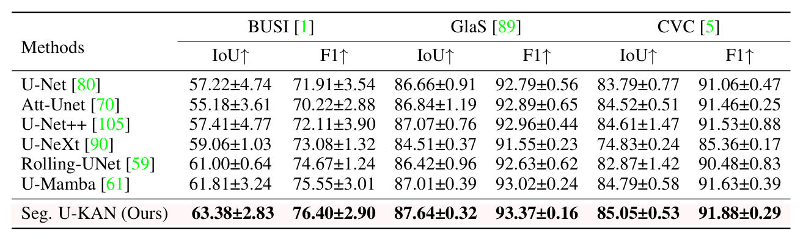
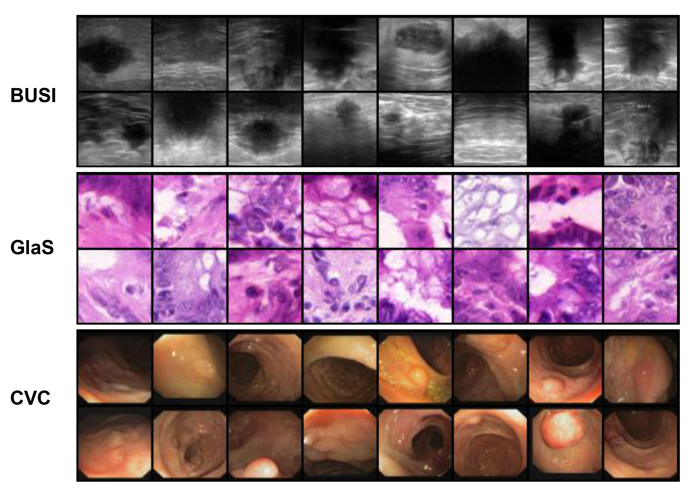
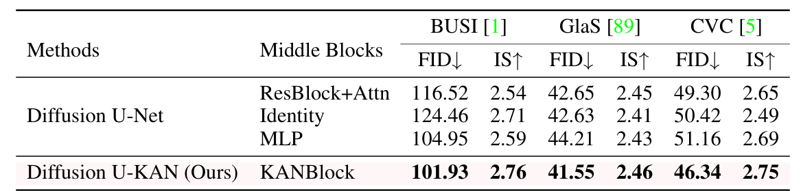

Network

Overall framework of the proposed Bi-JROS. (a) demonstrates the pretraining process of the shared encoder, (b) and (c) together constitute the bi-level optimization learning phase and (d) illustrates the mechanism of gradient updating.
Segmentation Bi-JROS
Qualitative Results

Quantitative Results
Diffusion U-KAN
Qualitative Results
Quantitative Results
Citation
@inproceedings{fan2024bi,
title={Bi-level learning of task-specific decoders for joint registration and one-shot medical image segmentation},
author={Fan, Xin and Wang, Xiaolin and Gao, Jiaxin and Wang, Jia and Luo, Zhongxuan and Liu, Risheng},
booktitle={Proceedings of the IEEE/CVF Conference on Computer Vision and Pattern Recognition},
pages={11726--11735},
year={2024}
}